1. Açıortay
| Herhangi bir açının ölçüsünü iki eş açıya bölen ışınlara açıortay denir.Yandaki şekilde AOB açısını iki eş açıya ayıran [OC ışınına açıortay denir. | 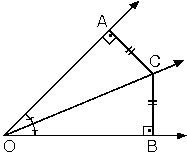 |
Açıortay üzerindeki herhangi bir noktadan açının kenarlarına çizilen dik uzunluklar eşittir.
AOB bir açı,
[OC açıortay
m(AOC) = m(COB)
AOC ve BOC eş üçgenler olduğundan |OA| = |OB| |
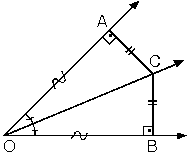 |
2. İç Açıortay Bağıntısı
| ABC üçgeninde [AN] açıortay ABN ve ANC üçgenlerinin[BC] tabanına göre, yükseklikleri eşit olduğundan
|
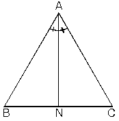 |
| ABN üçgeninde [AB] kenarına ait yükseklik ANC üçgeninde[AC] kenarına ait yüksekliğe eşittir.
|
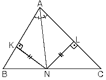 |
[AN] açıortay olmak şartıyla bu iki alan oranını birleştirirsek; (1) ve (2) den
| 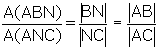 | olur |
| ABC üçgeninde [AN] açıortay olmak şartıyla
|
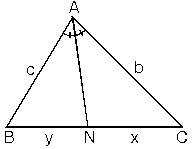 |
3. İç Açıortay Uzunluğu
| ABC üçgeninde A köşesinden çizdiğimiz açıortayuzunluğuna nA dersek
|
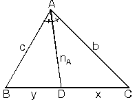 |
4. Dış Açıortay Bağıntısı
| ABC üçgeninde [AD], A köşesine ait dış açıortaydır.
|
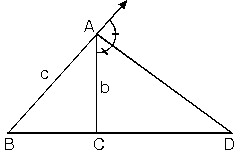 |
5. Dış Açıortay Uzunluğu
| ABC üçgeninde [AD] dış açıortayının uzunluğunan’A dersek
|
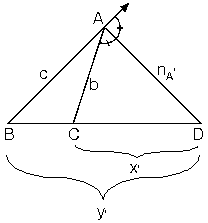 |
6. İç açıortayla dış açıortay arasındaki açı
| m(DAE)=90° | 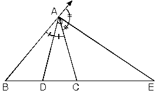 |
ABC üçgeninde [AD] iç açıortayı ile [AE] dış açıortayı arasındaki açı için
2a + 2b = 180°
a + b = 90° dir.
| [DA] ^ [AE] |
|
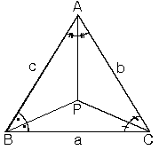 |